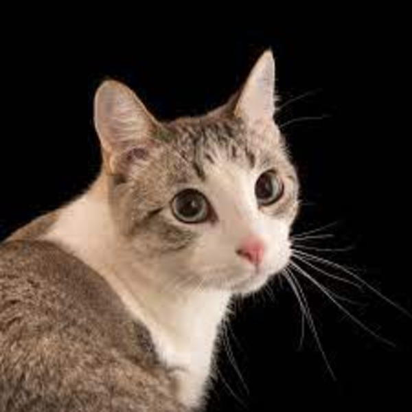

About the Cat
Cat, (Felis catus), also called house cat or domestic cat, domesticated member of the family Felidae, order Carnivora, and the smallest member of that family. Like all felids, domestic cats are characterized by supple low-slung bodies, finely molded heads, long tails that aid in balance, and specialized teeth and claws that adapt them admirably to a life of active hunting. Cats possess other features of their wild relatives in being basically carnivorous, remarkably agile and powerful, and finely coordinated in movement.The cat is similar in anatomy to the other felid species: it has a strong flexible body, quick reflexes, sharp teeth, and retractable claws adapted to killing small prey. Its night vision and sense of smell are well developed. Cat communication includes vocalizations like meowing, purring, trilling, hissing, growling, and grunting as well as cat-specific body language. Although the cat is a social species, it is a solitary hunter. As a predator, it is crepuscular, i.e. most active at dawn and dusk. It can hear sounds too faint or too high in frequency for human ears, such as those made by mice and other small mammals. It also secretes and perceives pheromones.